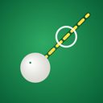

CueSight
GitHub repoPoint your iPhone at a pool or snooker table and see the shot drawn on the camera picture: where the balls go, where to aim and how hard to hit.
Early days. The app runs end to end in the iOS Simulator on a generated table, but it hasn't been tested on a real table or a real iPhone yet. The screenshots below are from the Simulator.
How it works
- Pick your table size and tap its four corners.
- Walk round the table while the app scans the balls.
- Check what it found and fix any ball by dragging it.
- Tap a ball and see up to three shots, with where to strike the cue ball and how hard.
- Walk behind the cue ball and line up. The lines are drawn from your view, and the app tells you to step left or right until you're on the line.

Pool on 7, 8 and 9 ft tables, and snooker on full-size and 10 ft tables, with basic 8-ball and snooker rules. Everything runs on the phone. No account, no server, and camera frames are never saved or sent.


Quick install
You need a Mac with Xcode 16 or newer.
git clone https://github.com/abozaralizadeh/CueSight.git
cd CueSight
open CueSight.xcodeprojPick the CueSight scheme and an iPhone Simulator, then press Run. In the Simulator the app uses a generated demo table in place of the camera.
To run on a real iPhone (iOS 17 or newer), set your own team under Signing and change the placeholder bundle id com.example.cuesight.
Run the tests
cd CueSightKit
swift testThe shot engine and the ball detector run on the Mac with no phone, against generated tables with lamps, shadows, noise and hand shake.
Help wanted
The big open question is accuracy on a real table. If you have an iPhone and a table, a scan plus ruler measurements of the balls is the most useful thing you can share. See the README for the compare tool, and CONTRIBUTING before sending code.
License
Source available, free for non-commercial use, under the PolyForm Noncommercial License 1.0.0. Commercial use needs written permission: ask by opening a GitHub issue. Docs, screenshots and the demo video are under CC BY-NC 4.0.